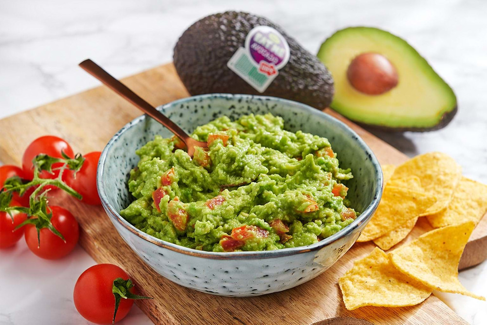

Delicioso Guacamole

Guacamole is traditionally made by mashing peeled, ripe avocados and sea salt with a molcajete y tejolote (mortar and pestle).
Ingredients
- 3 avocados - peeled, pitted, and mashed
- 1 lime juce
- 1 teaspoon salt
- ½ cup diced onion
- fresh cilantro
- 2 plum tomatoes
- Minced Garlic
- optional (blednded fresh jalapeno)
Steps
- Slice three ripe avocados in half, remove the pit and scoop them into a mixing bowl.
- Then use a fork to gently mash them to your desired level of chunky or smooth.
- Add the onions, tomatoes, cilantro, jalapeno pepper, garlic, lime juice and salt and stir everything together.
- That's it. The most delicious, easy guacamole!
Home Page